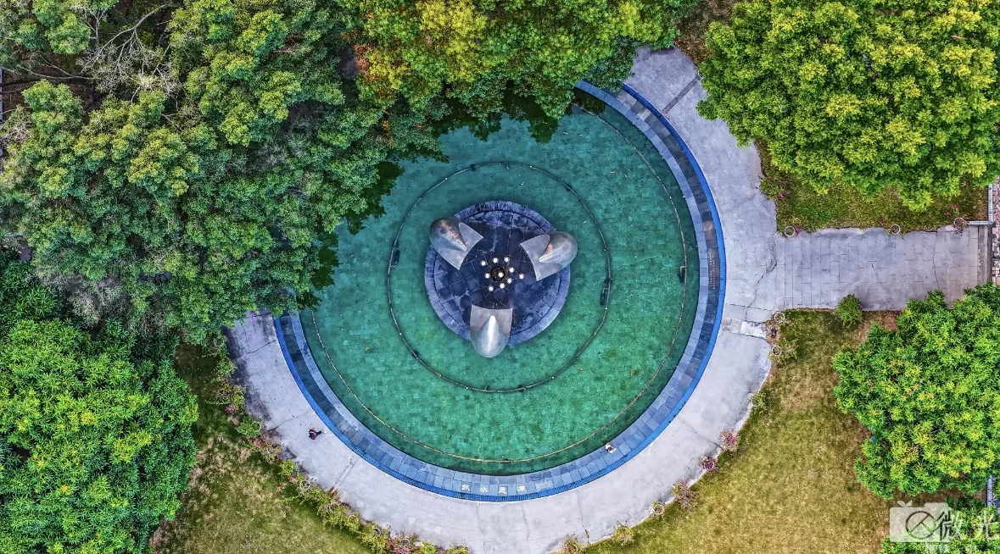
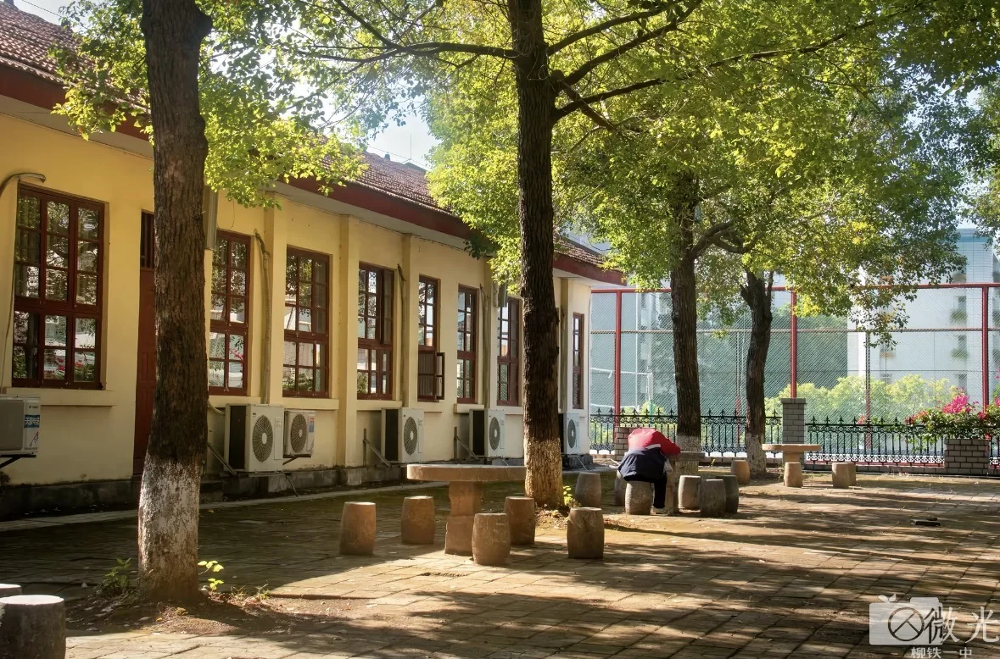
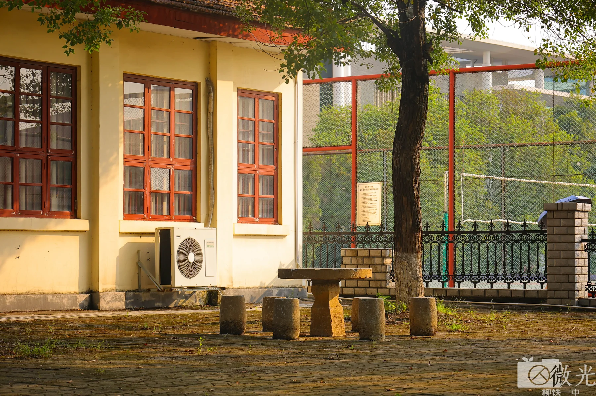
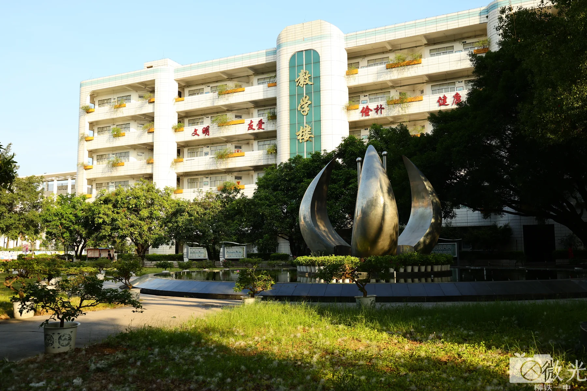
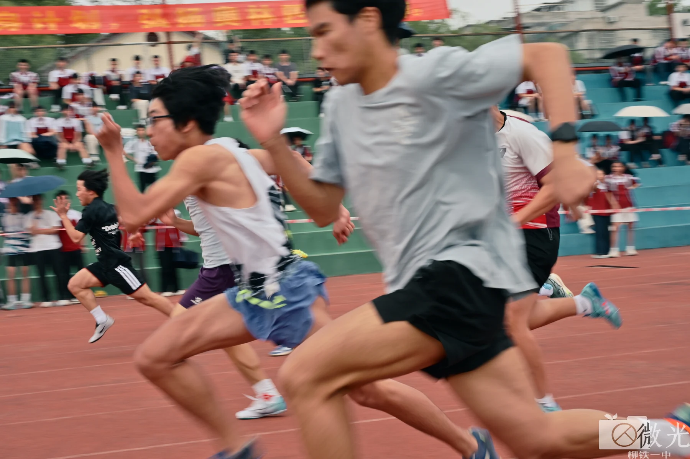

微光摄影社，是本校具备学校官方社团背书、由学生团队独立自主运营的原创影像创作社团。 我们专注影像记录、视觉创作与青春纪实，是校内专注摄影创作、校园记录、视觉美学的专业学生社团。
自 2016 年 9 月 10 日成立起，微光的快门一直没有停下。 这一串数字，仍在实时跳动。
Online Since2016 / 09 / 10 00:00
微光摄影社运行时长度量

圆形广场校园四季 · 01


微光之名，源于我们的创作初心：世界的美好从不只存在宏大壮阔的景象，更多藏在细碎、温柔、容易被忽略的日常光影里。
我们相信，每一个平凡瞬间都值得被认真定格、被温柔留存。
汇聚细碎光影
留存滚烫青春
在校园之中，我们记录四季更迭、晨昏晚霞、校园建筑、课间烟火、大型活动与青春百态，用镜头保存属于本校独有的校园记忆与少年模样。
走出校园之外，我们奔赴城市街巷、自然山野、人间烟火，开展外拍采风、团队创作、人像纪实，拓宽视野，练习构图、光影、审美与镜头表达。

运动青春校园纪实不必拥有相机。手机同样可以拍出好照片 —— 我们更在意你观察世界的角度，而不是你手里的器材。
从零开始完全没问题。新人可以从摄影审美、构图技巧、光影运用与后期基础学起，有基础的社员则相互交流、共同创作。
热爱生活、愿意观察、喜欢记录 —— 这三件事就够了。剩下的，我们一起来。
除日常拍摄创作外，社团长期产出原创校园文创、主题影像合集、校园纪实作品，打造专属于本校的影像资料库与青春影像存档。
我们坚持所有作品全部为社员原创实拍，坚持真诚记录、纯粹创作，拒绝搬运、敷衍与模板化创作。